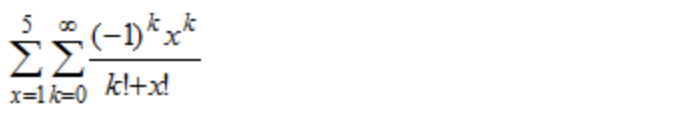
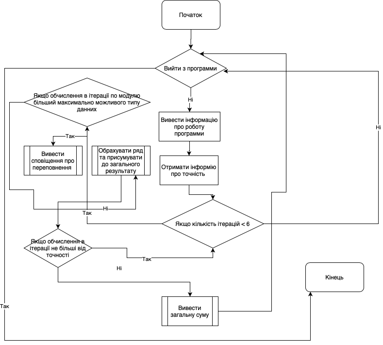
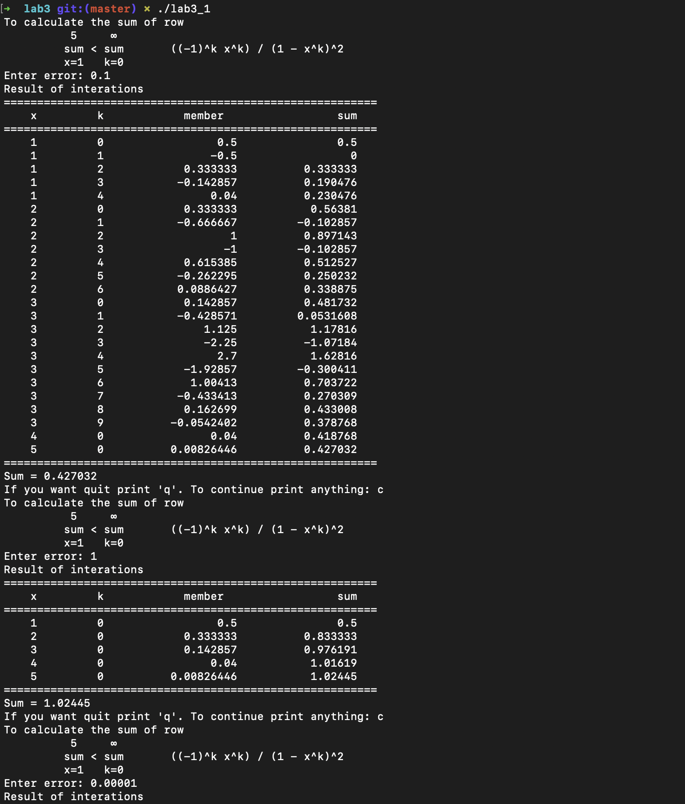
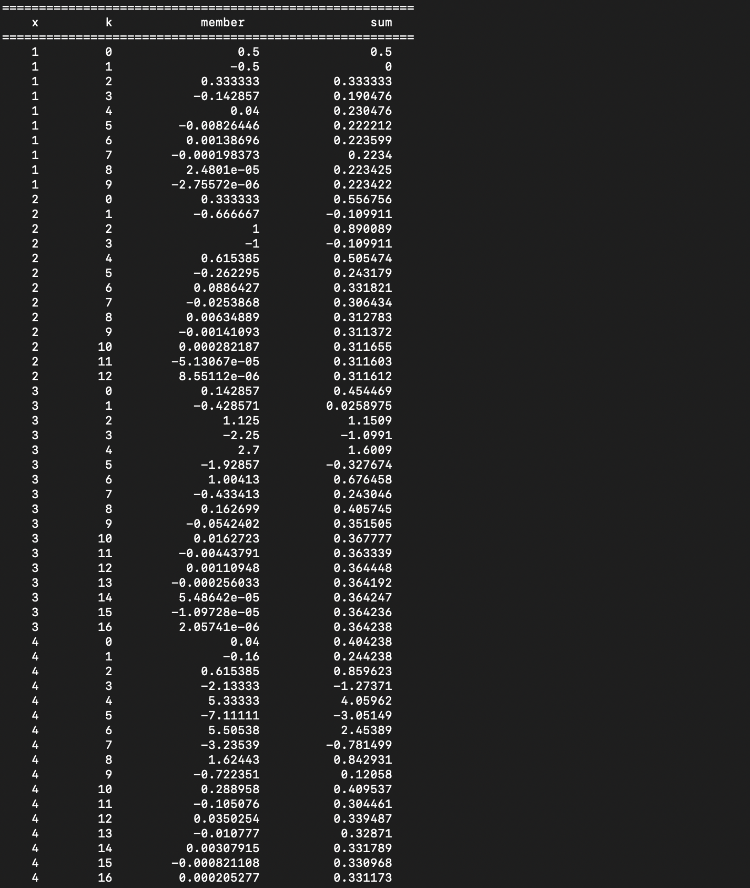
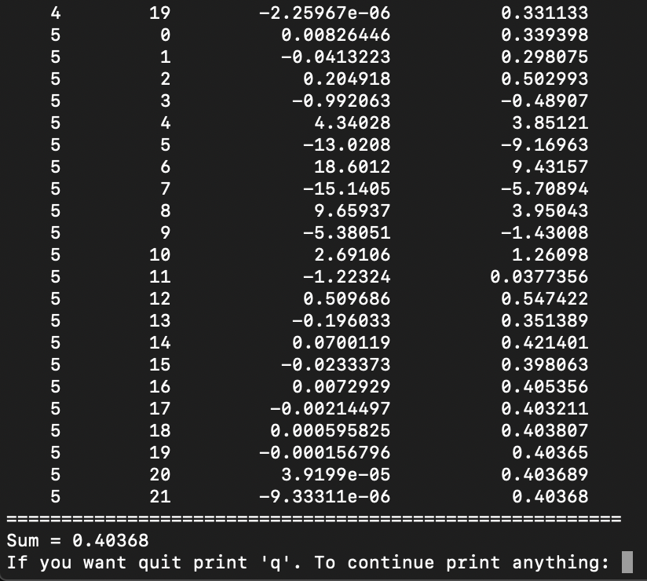

Студент: Крисевич Данило
Група: ІПЗ-12
З навчальної дисципліни: основи программування
Мета роботи:
Умови задач:
Аналіз задачі:
Умова:
Блоксхема:
Код программи:
#include <iostream>
#include <iomanip>
#include <limits.h>
float max_float = std::numeric_limits::max();
double factorial(int number) {
double sum = 1;
for (int i = 1; i <= number; i++) {
sum *= i;
}
return sum;
}
void OutputSum(double x, double k, double member, double sum) {
std::cout << std::setw(5) << x << std::setw(10) << k << std::setw(20) << member << std::setw(18) << sum << std::endl;
}
double MemberAndSum(double k, double x, float member, double precision, float sum) {
for (x = 1; x <= 5; x++) {
k = 0;
do {
if (member < 0 && abs(member) > max_float) {
std::cout << "Overflow - break cycle witk k" << std::endl;
break;
}
else if (member > 0 && abs(member) > max_float) {
std::cout << "Overflow - break cycle witk k" << std::endl;
break;
}
member = (pow((-1), k) * pow(x, k)) / (factorial(k) + factorial(x));
sum += member;
OutputSum(x, k, member, sum);
k++;
} while (fabs(member) > precision);
}
return sum;
}
int main() {
bool quit = false;
while (!quit)
{
float precision;
double k = 0.0, x = 0.0;
float member = 0.0, sum = 0.0;
std::cout << "To calculate the sum of row" << std::endl;
std::cout << "\t 5 \t∞" << std::endl;
std::cout << "\t sum < sum \t ((-1)^k x^k) / (1 - x^k)^2" << std::endl;
std::cout << "\t x=1 k=0" << std::endl;
std::cout << "Enter error: ";
std::cin >> precision;
std::cout << "Result of interations" << std::endl;
std::cout << "========================================================" << std::endl;
std::cout << "\tx \t\t k \t\t\t member \t\t\t sum" << std::endl;
std::cout << "========================================================" << std::endl;
sum = MemberAndSum(k, x, member, precision, sum);
std::cout << "========================================================" << std::endl;
std::cout << "Sum = " << sum << std::endl;
std::string input;
std::cout << "If you want quit print 'q'. To continue print anything: ";
std::cin >> input;
if (input == "q") {
quit = true;
}
}
return 0;
Коментарі:
Для більш зручної взаємодії з программою я додав цикл, що повторює функціонал программи рівно стільки раз - скільки хоче того користувач, таким чином я ініцилізував тип данних string з індефікаторм input для зчитування данних, що ввів користувач.
За правилами хорошо написання программ, я розбив программу на 3 функції, що виконують, кожен свою задачу.
Також використав класс з методом max для отримання числа, що є максимальним для типа float.
Результат:
  Аналіз:
По таблиці результатів бачимо, що при досягненні точності ітерація працює правильно. Отже, ми отримуємо вірний результат.
Висновки